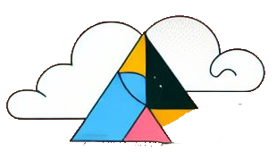
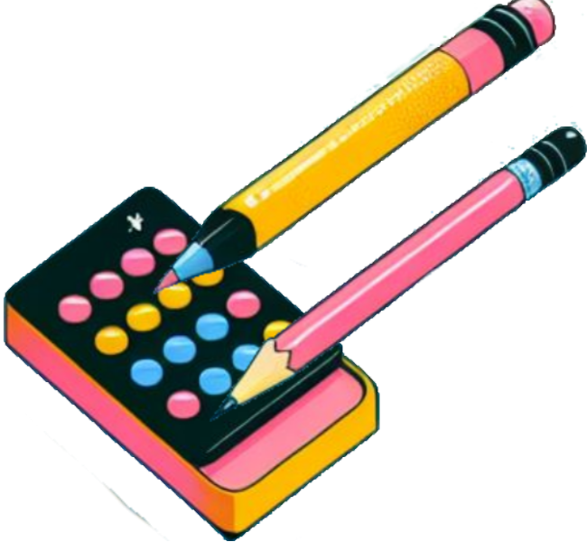

Dessins

Filtrer par :
Tous
Par concours
Par thème
Par date
Dessin numéro :
1
Note attribuée :
4.5
Nom du compétiteur :
John Doe
Description du concours :
Description ici
Thème du concours :
Thème ici